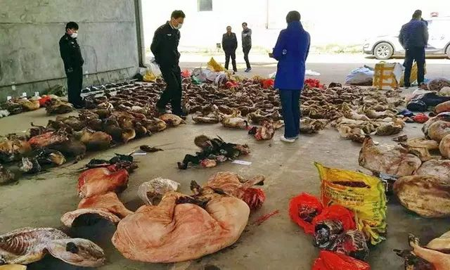
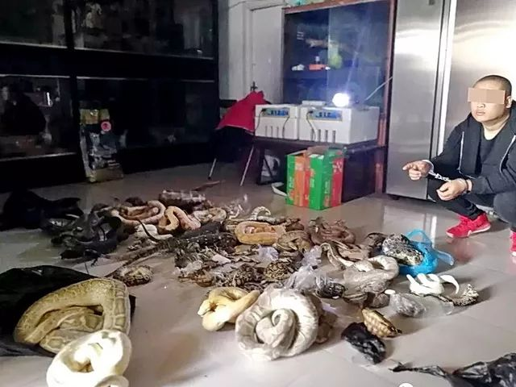

独家|重回武汉肺炎起点：卖野味的华南市场老板是谁？
原文链接 备份链接 本报记者 郝成 张家振 王迎春 武汉报道 目前确诊2000多人，引发全国高度关注，导致武汉封城的新型冠状病毒，被专家指来自于武汉市华南海鲜批发市场（以下简称“华南海鲜市场”）。该市场内的野生动物，则可能是最初病毒的携 …
28.01.2020
本文字数：3728，阅读时长大约7分钟
导读：在森林公安的案件库里，被列为“大案要案”每年就有数十起。从事野生动物非法猎捕、运输、买卖的犯罪分子，大多形成了地下交易黑色链条。
作者 | 第一财经 章轲
武汉爆发新型冠状病毒感染的肺炎疫情之后，我国捕食野生动物的状况受到社会各界越来越多的关注。
让我们来看几组触目惊心的数字：
2018年7月，江西省森林公安破获有史以来最大一起贩卖野生动物案，涉案动物17000余只！包括赤麂、河麂等省级和国家级保护动物，销售网络覆盖全国15个省份。
2018年11月，湖南省森林公安局通报，特大非法收购、运输、出售珍贵、濒危野生动物及其制品案告破，收缴穿山甲216只，129人被拘，这是湖南破获迄今全国数量最大的穿山甲案。
2018年12月，吉林省森林公安局森林案件侦查直属分局公安人员在通化市辉南县朝阳镇一商铺内查获野生动物死体4857只，包括国家二级保护动物猫头鹰、花尾榛鸡，国家三级保护动物山雀、狍子、松鸭、野兔等。
……
这些仅是中国野生动物消费市场的冰山一角。在森林公安的案件库里，被列为“大案要案”的每年就有数十起。从事野生动物非法猎捕、运输、买卖的，大多形成了地下交易黑色链条，大量的“野味”最终被摆上国人餐桌。
原国家林业局有关负责人曾表示，“到目前还没有准确、权威的数据表明中国是最大的野生动物消费国。”但中国野生动物产品消费和贸易量巨大的事实，是不容回避的。

野生动物捕杀交易网密布
江西省森林公安公布的上述贩卖野生动物案中，货主从江西境内一新余男子处无证收购运往湖南省张家界市加工成腊味出售，利润可以翻番。
经专案组调查，这是一张遍布全国15个省市区、江西11个地市30多个县的非法猎捕、收购、运输、出售野生动物的犯罪网络。犯罪嫌疑人人员众多、身份复杂，有农民、工人、企业主、学生，甚至还有多名铁路货运部门物流管理人员允许不法分子穿铁路工作服自由出入货运场所，将大量野生动物通过物流渠道非法发到全国各地。
此外，有当地野生动物保护管理部门工作人员也为不法分子非法开具运输证明文件，充当保护伞，为犯罪活动提供便利。

▲1.7万只！江西办史上最大贩卖野生动物案猎物现场。资料来源：森林公安
在湖南省邵阳市城步县，同样有一条非法猎捕、收购、贩卖、加工野生动物的完整产业链条。当地森林公安介绍，违法犯罪团伙捕杀交易蛇类、猪獾、果子狸等野生动物，查证涉案资金达300余万元，涉案人员涵盖猎户、商贩、运输从业者、经销商、规模酒店及餐饮店从业人员等，犯罪足迹遍布邵阳、娄底、岳阳、长沙等地。
在湖南临湘市，森林公安发现，盗猎团伙在短短的40天内，捕售的野鸟就多达50万只。2018年，当地森林公安人员发现，在一大片僻静隐蔽的空地上，散布着38个喂养鸟类的大棚。走进棚内，黑压压的一片全是关在笼子里的野生鸟类活体，地上还散落着大量小型鸟类死体。经鉴定，现场查获的野生鸟类有画眉、三道眉草鹀、小鹀、灰头鹀、黄眉柳莺及强脚树莺等国家保护的鸟类。
办案人员介绍，这些不法人员将非法捕捉、收购来的野生鸟类，在棚中通过高蛋白、抗生素等食品催肥后，采取在棚中热死、袋中闷死等方法处理后，再打包加冰，通过长途客车发往广东等地进行销售。
河北唐山南临渤海，境内河流湿地众多，全球八大候鸟迁徙路线之一的东亚-澳大利亚路线经过这里，这是候鸟迁徙过程中的重要停歇地，每年迁徙通过和留下越冬的鸟类有70多种上百万只。其中，有珍贵的丹顶鹤、东方白鹳、黑鹳、天鹅等，也有“三有”保护鸟类黄胸鹀（俗称禾花雀）、灰头鹀等。
这也是非法猎捕野鸟的集中地带。森林公安人员侦查发现，非法猎捕者田间猎捕、地头收购，然后在丰润区和曹妃甸区集中饲养，喂食谷物及激素类药物催肥，同时为预防疾病掺加大量抗生素，20多天后使用塑料袋闷死，运输到天津市，再空运到南方，销售到宾馆、饭店。
这其中，黄胸鹀最为典型，该鸟又名禾花雀，是河北省重点保护动物，在南方被认为有补肾壮阳的功效，是宾馆饭店的一道高档菜肴。有当地人员称，“抓到一只小黄鸟（黄胸鹀）10块钱，到了广东那边的饭店可以卖100块一只。”
武汉也是“野味”重要市场
这次新冠肺炎疫情的发源地在武汉，而早期确诊的病例大多来自武汉华南海鲜市场。中国疾控中心近日在病毒溯源研究中取得进展，证实武汉华南海鲜市场存在着大量新型冠状病毒。
第一财经记者从森林公安方面了解到，武汉也是国内一个“野味”的重要市场。
2019年，黑龙江齐齐哈尔市破获“9·3非法收售贩运野生鸟类”特大案件，共抓获25名涉案人员，此案涉及人数众多，鸟类数量巨大，涉案地区跨黑龙江、湖北两省，大庆、武汉等6市县。
办案人员介绍，这是一个庞大的猎捕、收购、贩运、销售野生动物的犯罪网络，且作案手段隐蔽，交流多用暗语，反侦查能力强。
在杜尔伯特蒙古族自治县境内，侦查人员发现，收购的野生动物均发往武汉。“与武汉的褚某祥有很频繁的大量资金流往来，初步断定其上线为武汉的褚某祥，同时在侦查时发现其下线多为附近村民，人数多达十余人。”
2019年9月，办案人员前往武汉查找嫌疑人褚某祥，确认收货地点为武汉市的白沙洲农副产品市场。现场查获81件经编织袋包装的纸壳箱子，共查获3200余只野生鸟类。

▲吉林一个波及全国的非法贩卖野生动物网络。资料来源：森林公安
▲收缴216只，129人被拘！湖南破获迄今全国数量最大的穿山甲案现场。资料来源：森林公安
武汉市的华南海鲜市场，名义上是海鲜市场，但实际上却是个综合市场。华南海鲜市场西区存在野生动物交易，尤其是西区的七街和八街靠近市场内部的区域，存在多家野生动物交易商铺，这里有各种野生动物，如竹鼠、果子狸、野鸭、蛇、野兔等。
起初发现确诊的几十名患者，主要都是华南海鲜市场的批发市场经营、采购人员。武汉市卫健委通报称，第一例感染不幸去世的患者也是常年在武汉华南海鲜市场采购货物。
2015年12月，全国人大常委会法制工作委员会曾介绍称，总体上我国野生动物保护形势依然十分严峻。该委员会在海南、广西、云南、黑龙江、吉林、湖北等地开展的实地调研发现，违法猎捕、杀害、买卖野生动物在很多地方仍然不同程度地存在。滥食滥用野生动物的陋习在一些地区还相当盛行。
原国家林业局2014年的一份有关《积极应对人感染H7N9禽流感疫情，切实做好春季陆生野生动物疫源疫病监测防控工作的紧急通知》也称，“根据各地监测报告，去年以来河北、湖北等地先后出现了H5N1、H5N2、H9N2和H10N8亚型禽流感疫情，新疆4个地（州）的5个县（市）先后暴发羊小反刍兽疫疫情。”
保护不利，缘于“合理利用”作祟
本月26日，市场监管总局、农业农村部、国家林草局联合发布《关于禁止野生动物交易的公告》，要求各地饲养繁育野生动物场所实施隔离，严禁野生动物对外扩散和转运贩卖。各地农（集）贸市场、超市、餐饮单位、电商平台等经营场所，严禁任何形式的野生动物交易活动。
该公告同时表示，“消费者要充分认识食用野生动物的健康风险，远离‘野味’，健康饮食。”
此前在24日，上述三部门还发出了《关于加强野生动物市场监管积极做好疫情防控工作的紧急通知》，要求对饲养、繁育、运输、出售、购买等环节，加强检验检疫力度，对竹鼠、獾等可能携带新型冠状病毒的野生动物，在其饲养繁育场所实施封控隔离，严禁对外扩散，禁止转运贩卖。对其他未经检疫合格的野生动物，一律严禁进入市场。突出农贸市场、超市、餐饮等重点场所以及网站。
但这些举措的效果如何，还有待观察。滥食野生动物的陋习在许多地方、许多人的消费习惯中已根深蒂固。
“一部分人抱着吃野味滋补的错误想法，还有猎奇性的消费、炫耀性的消费观念。”原国家林业局上述负责人表示，野生动物的产品相对来说是比较稀缺的，非法经营和售卖野生动物产品的利润空间较大，在经济利益上有一定驱动力。
同时，猎捕、运输、通信手段高技术化了。不法分子猎捕的成功率更高，相对带来的破坏力也较大，同时违法的成本更低了。
我国是世界上野生动物种类最丰富的国家之一，仅脊椎动物种类就达6500多种，约占全球脊椎动物种类总数的10%。消耗较严重或濒危程度较高的野生动物有252个物种。巨大的野生动物资源，加上监管能力薄弱和一定的市场需求，使得制止野生动物消费和贸易有相当难度。

▲河北某野生动物养殖场。摄影/章轲
有专家对第一财经记者表示，另一个关键性因素，就是长期以来对于野生动物“合理利用”的说法一直占着上风。
观点上的分歧，在2015年修改《野生动物保护法》时表现得最为激烈。有专家表示，利用、食用野生动物及其制品应当遵守法律法规，符合公序良俗。中国人民大学法学院教授周珂表示，有了“合理利用”，野生动物保护法实际上就变成了“野生动物开发利用法”。在他看来，“合理利用”与“保护”水火不相容。
但也有官员表示，野生动物资源一直伴随着人类社会的起源和发展，人类一直在不断利用野生动物。
此次武汉新型冠状病毒感染肺炎的疫情爆发后，中科院、清华大学、北京大学的19名院士学者曾联名呼吁，杜绝野生动物非法食用和交易，从源头控制重大公共健康危机。专家们表示，必须以更加刚性的法律约束，遏制野生动物食用和交易的恶习。
专家们称，科学研究表明，近些年来世界各地出现的新发传染病，如亨德拉、尼帕病毒，H7N9禽流感、埃博拉、中东呼吸综合征等，都与动物有关。统计发现有超过70%的新发传染病来源于动物。
专家们称，这些病毒本来存在于自然界，野生动物宿主并不一定致病致死，但由于人类食用野生动物，或者侵蚀野生动物栖息地，使得这些病毒与人类的接触面大幅增加，给病毒从野生动物向人类的传播创造了条件，危及公共卫生安全。加之交通的便利和人口的流动，使得流行病爆发的几率大大增加。
【推荐阅读】
UP主实拍：“空城”武汉的物价、交通 、生活状态


原文链接 备份链接 本报记者 郝成 张家振 王迎春 武汉报道 目前确诊2000多人，引发全国高度关注，导致武汉封城的新型冠状病毒，被专家指来自于武汉市华南海鲜批发市场（以下简称“华南海鲜市场”）。该市场内的野生动物，则可能是最初病毒的携 …
原文链接 备份链接 SARS之后，我们以为人们对野味的消费会减少很多，没想到最近几年，这种需求又在不断增加，消费的种类也呈现不断扩大趋势。然而，从猎捕到运输、加工、售卖下的每个环节，也使得病毒在传播过程中不断发生变异。 记者 | 王珊 王 …
原文链接 备份链接 【财新网】（记者 黄蕙昭 刘登辉）大年初三一早，迎接人们醒床的第一条消息，是国务院办公厅延长春节假期至2月2日的通知。疫情肆虐，延迟返工返校政策早有预兆。考虑到春节结束大规模人口迁移可能导致又一轮疫情集中爆发，适当延 …
原文链接 备份链接 守家就是守城——武汉包子姐的除夕 2020-01-25 21:10 作者：周远征 来源：中国经营网 本报记者 周远征 重庆报道 “不管你在不在武汉，愿我们的心意在一起，大家一起保护自己，支持武汉，愿新的一年平安顺遂，无 …
原文链接 备份链接 新型肺炎疫情持续发酵，已致武汉封城。网络上的信息铺天盖地，仍无法解开我们的疑问。疫情真相为何？疫区实际情况是怎样？目前身在武汉的单读作者晓宇，讲述了他的所见所感。 瘟疫进行时 撰文：晓宇 一月十七日，我去车站接朋友。 …